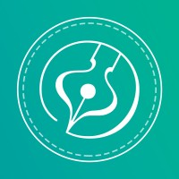

Walison
Nascimento
Suporte Técnico & Estudante de Ciência da Computação
Transformando problemas técnicos em soluções simples.
Apresentação
Sou estudante de Ciência da Computação com interesse em infraestrutura de TI, automação e arquitetura de sistemas. Tenho experiência prática com ambientes Linux, redes e configuração de serviços, além de explorar ferramentas voltadas para automação e gerenciamento de infraestrutura. Meu objetivo é atuar na área de infraestrutura ou cloud, contribuindo na construção, manutenção e otimização de ambientes tecnológicos seguros e bem estruturados.
Experiências Profissionais

Openix Soluções em Software
Estagiário — Suporte Técnico TI- → Manutenção de computadores e periféricos
- → Administração de usuários (Google Workspace e GPO)
- → Suporte técnico presencial e remoto
- → Gestão de inventário e ativos de TI
- → Linux e automação com Ansible

Cartório do Barreiro
Estagiário — Auxiliar TI- → Manutenção preventiva e corretiva de hardware e software
- → Formatação, configuração e instalação de sistemas
- → Suporte interno presencial e remoto
- → Configurações básicas de rede e resolução de incidentes
- → Atendimento ao público no setor de notas
Projetos

Restaurante
HTML · CSS · JS
Barbearia
HTML · CSS · JS
E-commerce
HTML · CSS · JSMinhas Habilidades
Minhas Ferramentas






